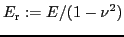
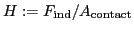
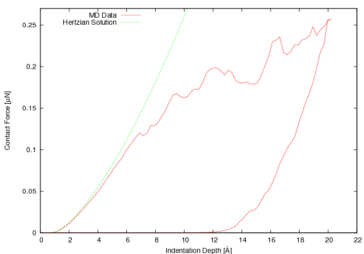
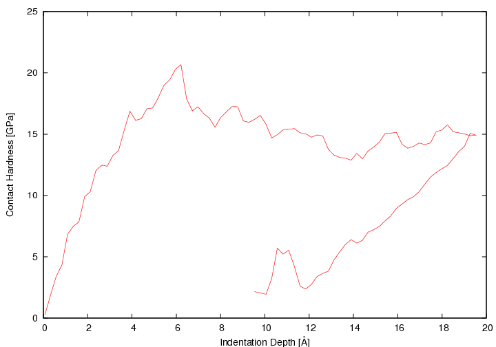
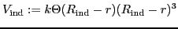
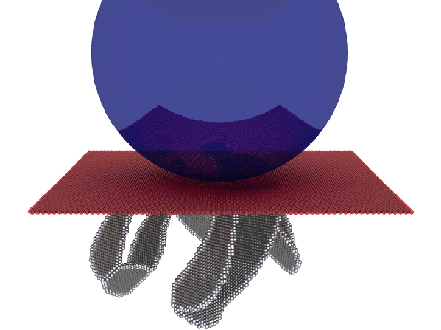
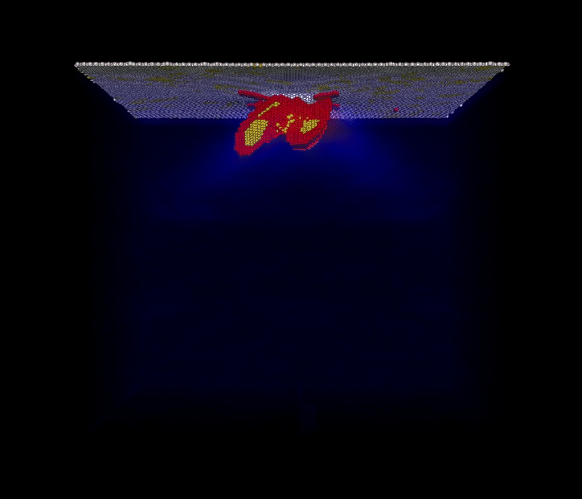

Introduction to Nanoindentation
Indentation experiments in which a hard tip is indented into a substrate allow research on basic material properties. Indentation in general is an important technique for determining the elastic properties of materials Tabor (1996,2000). Besides the reduced elastic modulus

Oliver and Pharr (1992); Hertz (1882); Chaudhri (2000) one can determine the contact hardness

Fischer-Cripps (2004) of materials.


For small length scales Gane and Bowden (1968) the material properties differ from the macroscopic expectations. Particularly the force-depth curve has characteristic dips (the so-called pop-ins) at the elastic-plastic transition Göken and Kempf (2001). This and the overestimated theoretical shear stress Frenkel (1926) suggest that atomistic effects play an important role for the macroscopic length scale material behavior; namely these atomistic effects are dislocations Phillips (2001); Hull and Bacon (1992). The indented surface itself is also of interest: pile-up effects and regeneration are only two important topics. Therefore an understanding of the atomistic plasticity is of great importance for material modeling on larger length scales and for understanding the material properties (hardness, elasticity) at all. Apart from that this the current length scale of electronic devices has already reached the nm-scale and atomistic effects itself are becoming important for industrial production.
Molecular Dynamic Simulations of Nanoindentation
The big advantage of simulations in contrast to the experiment is a total control of the system. Therefore simulations are predicted to research the atomistic effects. By using molecular dynamics (MD) Frenkel and Smit (1996); Plimpton and Ziegenhain (2006); Allen and Tildesley (2002) the onset of plasticity has been investigated in various systems Smith et al. (2003); Mulliah et al. (2003); Lilleodden et al. (2003); Christopher et al. (2001). The elastic properties are treated in detail in Lilleodden et al. (2003) and preliminary simulations for anisotropical effects have been done Tsuru and Shibutani (2007). Alternatively one could choose finite-element simulations for the modeling Durst et al. (2002,2004); these operate inherently on larger scales and are therefore not reasonable for atomistic length scales. Nevertheless it is promising to exploit the concurrent length scales of the physical system by coupling both simulation methods McGee et al. (2006). This strategy will not be pursued in the present project.In our simulations we model the indenter as an external constraint using the potential proposed in Kelchner et al. (1998):



Bibliography
M. Allen and D. Tildesley. Computer Simulation of Liquids. Claredon Press Oxford, 2002. M. Chaudhri. A note on a common mistake in the analysis of nanoindentation data. J. Mater. Res., 16 (2): 336-339, 2000. D. Christopher, R. Smith, and A. Richter. Nanoindentation of carbon materials. NIM B, 180: 117-124, 2001. K. Durst, M. Göken, and G. Pharr. Finite element simulation of spherical indentation in the elastic-plastic transition. Z Metallkd, 93 (9): 857, 2002. K. Durst, M. Göken, and H. Vehoff. Finite element study for nanoindentation measurements on two-phase materials. J Mater Res, 19 (1): 85, 2004. A. Fischer-Cripps. Nanoindentation. Springer, 2004. D. Frenkel and B. Smit. Understanding Molecular Simulation - From Algorithms to Applications. Academic Press, 1996. J. Frenkel. Zur Theorie der Elastizitätsgrenze und der Festigkeit kristalliner Körper. Zeitschrift für Physik A Hadrons and Nuclei, 37: 572, 1926. N. Gane and F. Bowden. Microdeformation of solids. J Appl Phys, 39 (3): 1432, 1968. M. Göken and M. Kempf. Pop-ins in nanoindentations - the initial yield point. Zeitschrift fuer Metallkunde, 92 (9): 1061, 2001. H. Hertz. Über die Berührung fester elastischer Körper. J. reine angewandte Mechanik, 92: 156-171, 1882. D. Hull and D. Bacon. Introduction to Dislocations. Pergamon, 1992. C. Kelchner, S. Plimpton, and J. Hamilton. Dislocation nucleation and defect structure during surface indentation. Phys. Rev. B, 58 (17): 11085, 1998. E. Lilleodden, J. Zimmerman, S. Foiles, and W. Nix. Atomistic simulations of elastic deformation and dislocation nucleation during nanoindentation. J Mech Phys Solids, 51: 901-920, 2003. E. McGee, R. Smith, and S. Kenny. Multiscale modelling of nanoindentation. Z Metallk, 2006. D. Mulliah, D. Christopher, S. Kenny, and R. Smith. Nanoscratching of silver (100) with a diamond tip. NIM B, 202: 294-299, 2003. W. Oliver and G. Pharr. An improved technique for determining hardness and elastic modulus using loas and displacement sensing indentation experiments. J Mater Res, 7 (6): 1564, 1992. R. Phillips. Crystals, Defects and Microstructure. Cambridge, 2001. S. Plimpton and G. Ziegenhain. Lammps - large-scale atomic/molecular massively parallel simulator; with modified analysis. lammps.sandia.gov, 2006. R. Smith, D. Christopher, and S. Kenny. Defect generation and pileup of atoms during nanoindentation of fe single crystals. PRB, 67: 245405-1, 2003. D. Tabor. Indentation hardness: fifty years on - a personal view. Phil Mag A, 74 (5): 1207-1212, 1996. D. Tabor. The Hardness of Metals. Oxford, 2000. T. Tsuru and Y. Shibutani. Anisotropic effects in elastic and incipient plastic deformation under (001), (110) and (111) nanoindentation of al and cu. PRB, 75: 035415, 2007.
G. Ziegenhain - 24.10.2007